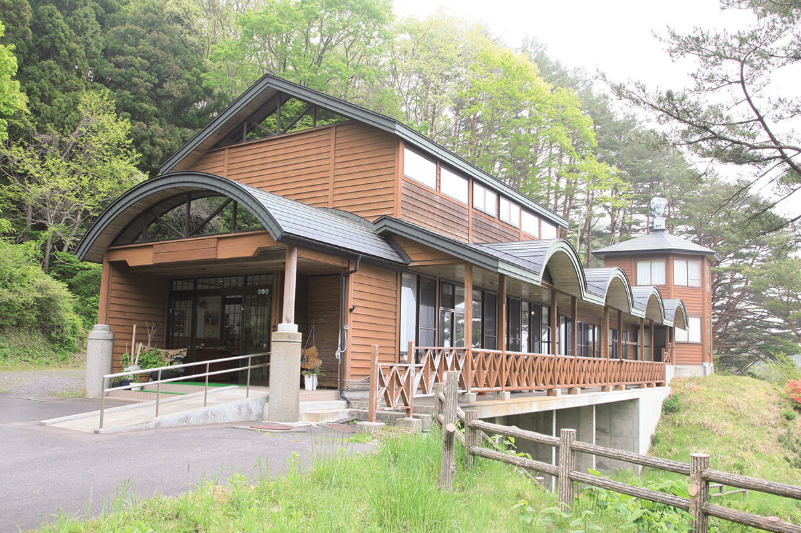
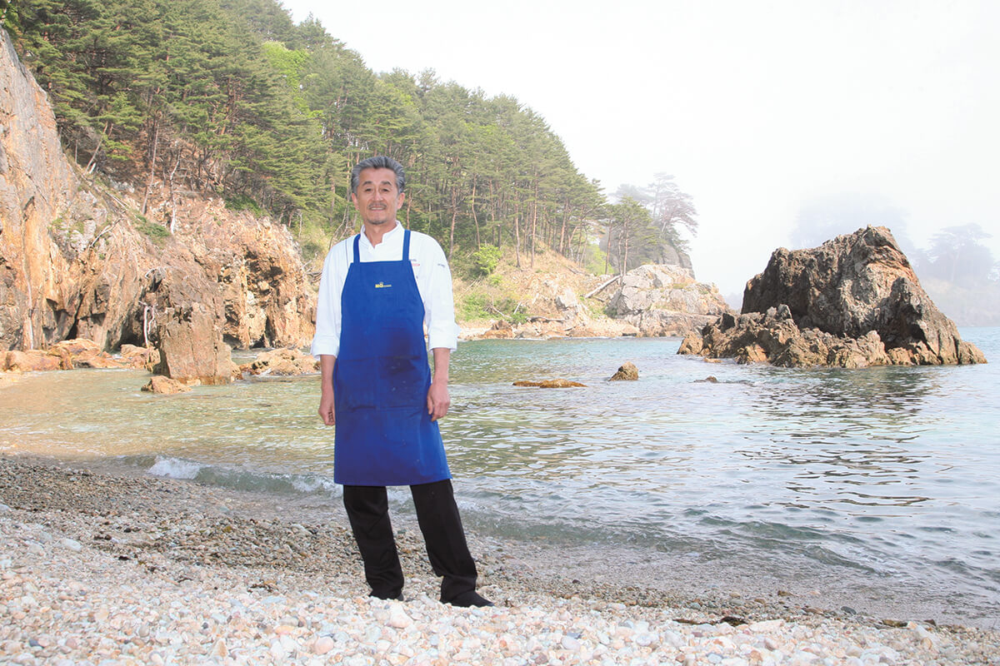
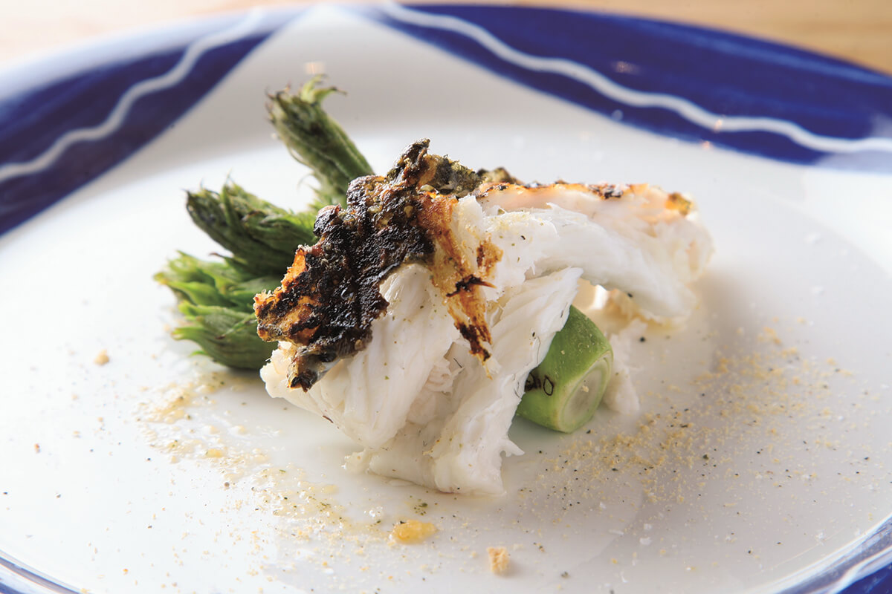
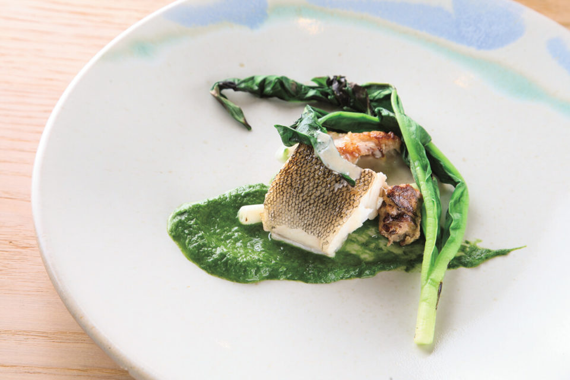
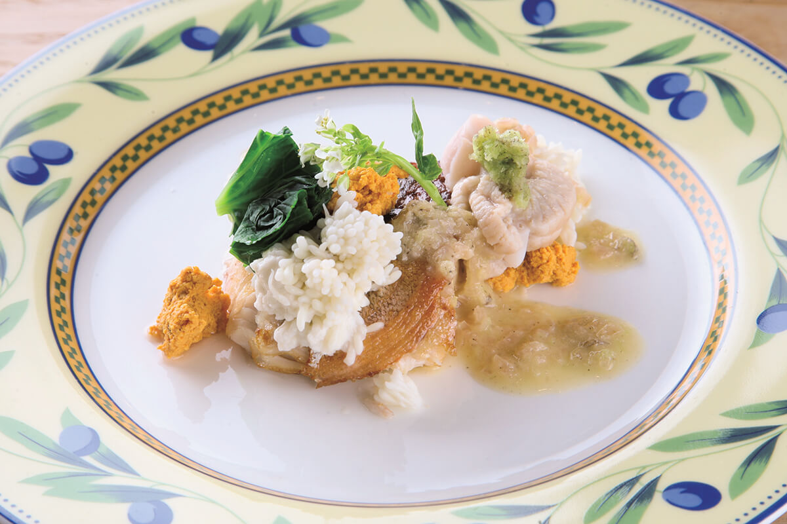
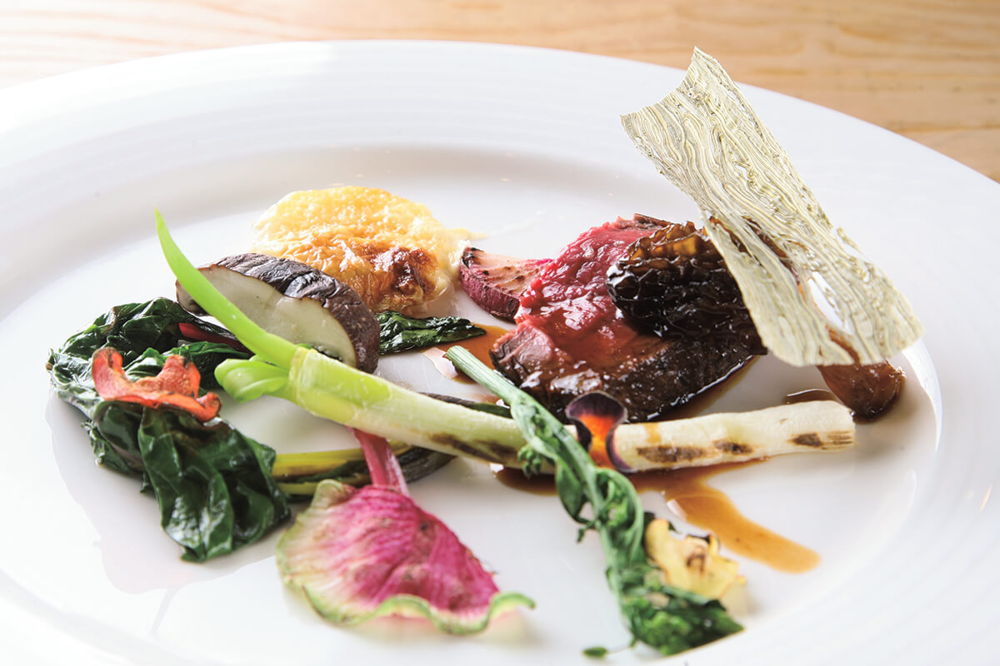
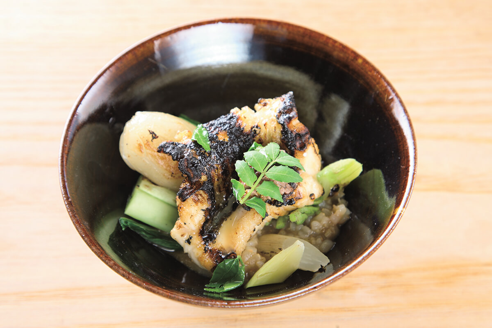

Префектура Иватэ · Танохата · еда
L'Auréole Tanohata: ресторан на обрыве над морем Санрику и одиннадцать блюд импровизации

Деревня Танохата на побережье Санрику одна из самых маленьких в префектуре Иватэ, и дорога сюда долгая. В 2016 году известный шеф Ито открыл здесь ресторан, ради которого гости едут через полпрефектуры.
Место
Ресторан на краю обрыва
Если заведение настоящее, люди найдут его, каким бы маленьким оно ни было и в какой бы глуши ни стояло. L'Auréole Tanohata хорошо подтверждает это правило. От станции Мориока, столицы префектуры, сюда около двух с половиной часов на поезде или полтора часа на машине. Добраться так непросто, что ресторан прозвали «Эль Булли региона Тохоку».
Море Санрику за окнами поражает прозрачностью. «Отсюда иногда видно морских ежей», говорит шеф. До воды при этом метров десять. Ресторанный обозреватель, приехавший сюда в 2019 году, не поверил и спустился проверить. Внизу открывается ярко-синее море, а если обернуться, видно ресторан на самом краю скалы.
«Вот это и есть ресторан на краю пропасти»
шеф-повар Ито
Так шутить может только он. Примерно за двадцать лет до 2019 года Ито хотел уехать на стажировку во Францию, но не сложилось, и он переехал в Маэдзаву, где жила семья жены. На новом месте он занялся продвижением местной говядины «Маэдзава-гю», победил «железного повара» в кулинарном телешоу и быстро стал одним из самых известных шефов Иватэ.

Выбор
Почему именно Танохата
После такого успеха все ждали, что шеф перенесёт ресторан в Мориоку. Но в 2016 году он выбрал Танохату, деревню на побережье префектуры.
«В Мориоке дела шли бы стабильнее. Но моё дело другое»
шеф-повар Ито
Ито давно думал о том, что маленькие деревни просто исчезнут, если не придумать, как привлечь людей туда, куда они не ездят. Он хотел открыть ресторан в самой маленькой деревне префектуры и поэтому выбрал Танохату.
«Потом выяснилось, что соседняя деревня Фудай ещё меньше. Но с деньгами в Танохате было тяжелее, так что всё сложилось правильно»
шеф-повар Ито
Шефа зовут готовить и проводить мероприятия по всей Японии, но он находит время и для возрождения деревни. Гостям ресторана он советует местное жильё и морские прогулки вдоль берега Танохаты на бывших рыбацких лодках.
«Если думать только о собственной выгоде, край не изменится. Нужно действовать сообща, чтобы выигрывали все»
шеф-повар Ито
Кухня
Одиннадцать блюд, шесть из них рыбные
«Стоило ехать в такую даль», сказал себе обозреватель, закончив ужин за 7000 иен (цена 2019 года). О загородных ресторанах много пишут и снимают, но тех, что оставляют по-настоящему довольным, немного. Их главное преимущество в продуктах, которых не найти больше нигде. Одной свежести, впрочем, мало: вкус делает повар. Если переусердствовать с обработкой, продукт потеряет свой вкус и текстуру, а если от щедрости добавить в тарелку всё подряд, гость не поймёт, что ел. Блюдо, в котором чувствуется место, получается, только когда шеф точно знает, какой приём здесь нужен.

В основе кухни Ито французская школа, но подача и способы выражения у него совершенно свободные. Утром он едет за продуктами, смотрит, что есть, и примерно набрасывает меню, а окончательно оно складывается уже у плиты. По сути, это импровизация. Формально это курс, но вместо привычной французской последовательности из закуски, супа, рыбы, мяса и десерта здесь одиннадцать блюд.


Шесть блюд из одиннадцати рыбные. Ито известен мясными блюдами, но в Танохате на первый план вышла рыба: в этих водах ловят много белой рыбы, а её мягкий вкус лучше всего раскрывают овощные соусы. Сочетать каждую рыбу с овощами придумал сам Ито, и овощи у него играют большую роль, будь то соус из шпината или гарнир. Иногда на столе появляется жареная рыба с овощами, которую легко принять за японскую кухню.
«Я и сам порой не понимаю, где проходит граница, что это за кухня. Когда продуктов много, пять рыбных блюд подряд никого не удивляют. А зимой, когда нет ничего, бывают дни, когда в курсе одна пекинская капуста»
шеф-повар Ито

Курс из одной капусты хочется попробовать, и в этом, по мнению обозревателя, секрет: загородный ресторан выживает, только если у него такой шеф. В настоящей глуши, в отличие от города, бывают сезоны, когда продуктов почти нет. Успеха добивается тот, кто не теряется и придумывает из этого необычные блюда.
К 2019 году затея Ито шла успешно. Дамы из Мориоки едут сюда на обед по два с половиной часа, пары возвращаются снова и снова: людей зовут кухня шефа и вид на берег Танохаты.

Деревня оказалась шефу по душе. «Здесь я встретил новых производителей, которые работают с большой отдачей, и редкие местные блюда», говорит он. Связи, которые он завёл, оживляют одну из самых маленьких деревень Иватэ, а сам Ито доказал простую вещь: если у места есть характер, люди приедут.
L'Auréole Tanohata
- Адрес
- префектура Иватэ, уезд Симохэй, деревня Танохата, Акэто, 309-5
- Телефон
- +81 80-9014-9000
- Часы работы
- 12:00–14:00 (последний заказ), 18:00–20:00 (последний заказ), только по предварительной записи не позднее чем за два дня
- Выходные
- нерегулярные
- Цены / Вход
- обед от 2500 иен, ужин от 3500 иен (с налогом и обслуживанием)
Фото: Мунэаки Маэда.